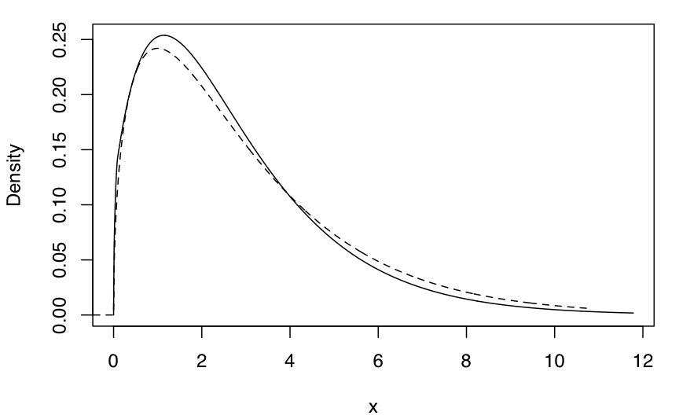
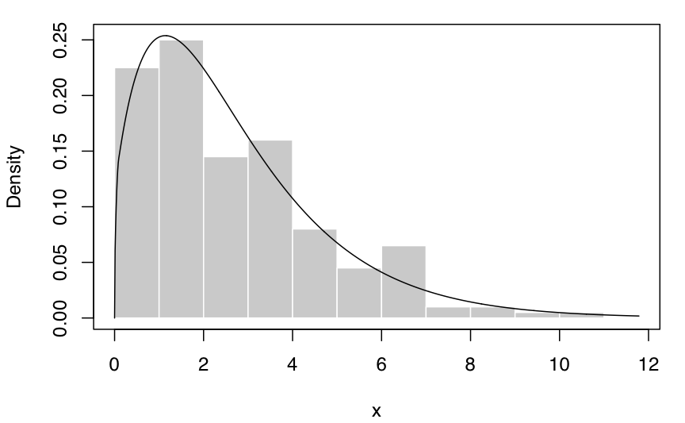
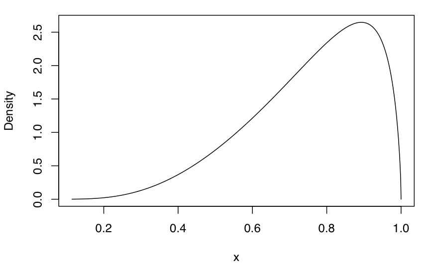
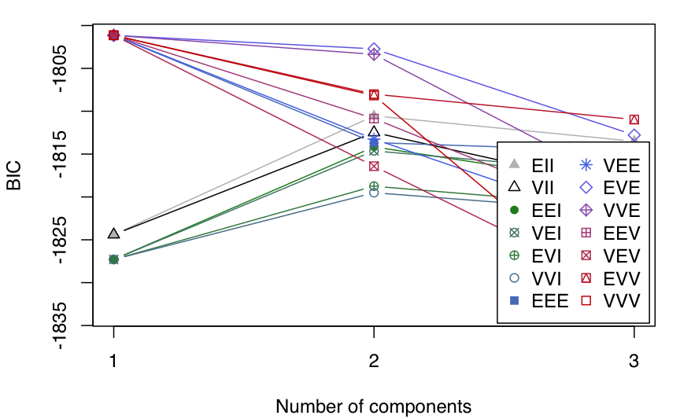
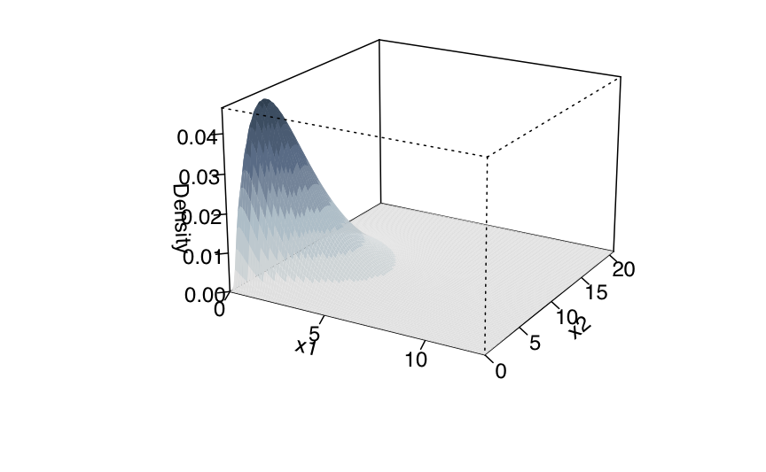
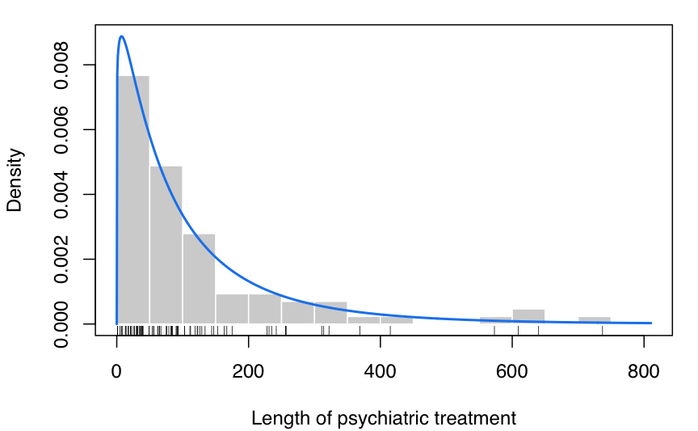
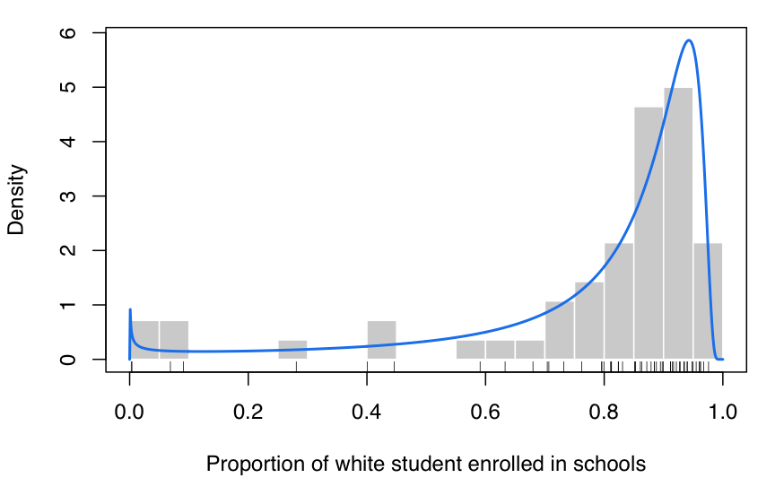
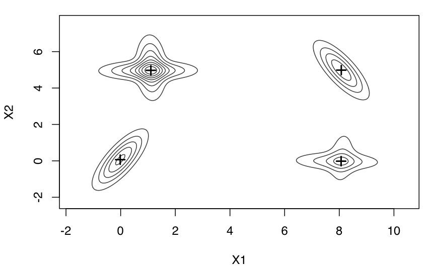
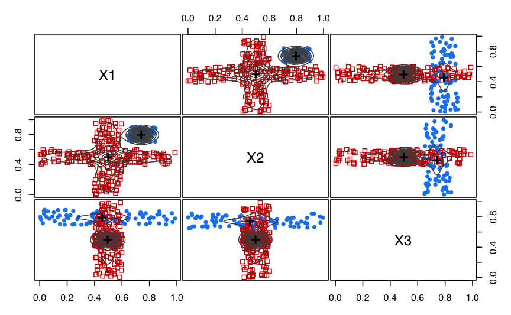
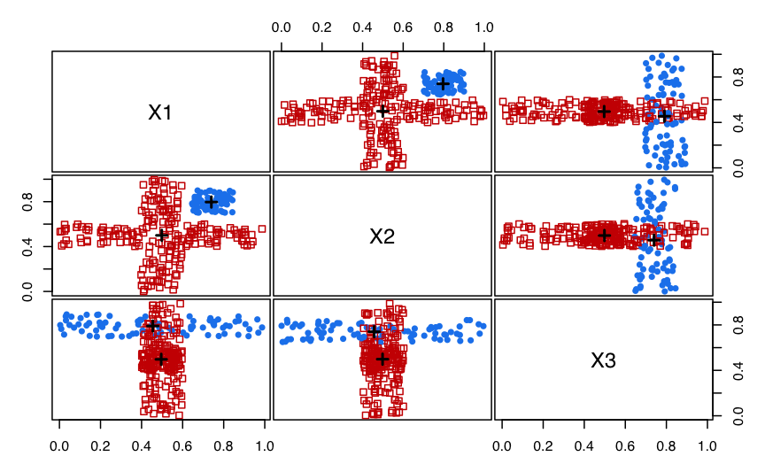

A quick tour of mclustAddson
Luca Scrucca
31 May 2021
mclustAddson.RmdIntroduction
mclustAddson is a contributed R package that extends the functionality available in the mclust package (Scrucca et al. 2016).
In particular, the following methods are included:
density estimation for data with bounded support;
modal clustering using modal EM algorithm for Gaussian mixtures.
This document gives a quick tour of mclustAddson (version 0.4). It was written in R Markdown, using the knitr package for production.
References on the methodologies implemented are provided by citation("mclustAddson"). See also at the end of this document.
library(mclustAddson)
## Loading required package: mclust
## Package 'mclust' version 5.4.8
## Type 'citation("mclust")' for citing this R package in publications.Density estimation for data with bounded support
Univariate case with lower bound
x <- rchisq(200, 3)
xgrid <- seq(-2, max(x), length=1000)
f <- dchisq(xgrid, 3) # true density
dens <- densityMclustBounded(x, lbound = 0)
summary(dens, parameters = TRUE)
## ── Density estimation for bounded data via GMMs ───────────
##
## Boundaries: x
## lower 0
## upper Inf
##
## Model E (univariate, equal variance) model with 1 component
## on the transformation scale:
##
## log.likelihood n df BIC ICL
## -390.1 200 3 -796 -796
##
## x
## Range-power transformation: 0.3715
##
## Mixing probabilities:
## 1
## 1
##
## Means:
## 1
## 0.9191
##
## Variances:
## 1
## 1.309
plot(dens, what = "density")
lines(xgrid, f, lty = 2)
plot(dens, what = "density", data = x, breaks = 15)
Univariate case with lower & upper bounds
x <- rbeta(200, 5, 1.5)
xgrid <- seq(-0.1, 1.1, length=1000)
f <- dbeta(xgrid, 5, 1.5) # true density
dens <- densityMclustBounded(x, lbound = 0, ubound = 1)
summary(dens, parameters = TRUE)
## ── Density estimation for bounded data via GMMs ───────────
##
## Boundaries: x
## lower 0
## upper 1
##
## Model E (univariate, equal variance) model with 1 component
## on the transformation scale:
##
## log.likelihood n df BIC ICL
## 104.5 200 3 193 193
##
## x
## Range-power transformation: -0.1601
##
## Mixing probabilities:
## 1
## 1
##
## Means:
## 1
## 1.164
##
## Variances:
## 1
## 0.7222
plot(dens, what = "density")
plot(dens, what = "density", data = x, breaks = 11)
Bivariate case with lower bounds
x1 <- rchisq(200, 3)
x2 <- 0.5*x1 + sqrt(1-0.5^2)*rchisq(200, 5)
x <- cbind(x1, x2)
dens <- densityMclustBounded(x, lbound = c(0,0))
summary(dens, parameters = TRUE)
## ── Density estimation for bounded data via GMMs ───────────
##
## Boundaries: x1 x2
## lower 0 0
## upper Inf Inf
##
## Model VEE (ellipsoidal, equal shape and orientation) model with 1 component
## on the transformation scale:
##
## log.likelihood n df BIC ICL
## -882 200 7 -1801 -1801
##
## x1 x2
## Range-power transformation: 0.2835 0.3095
##
## Mixing probabilities:
## 1
## 1
##
## Means:
## [,1]
## [1,] 0.8882
## [2,] 2.1712
##
## Variances:
## [,,1]
## [,1] [,2]
## [1,] 1.182 0.4040
## [2,] 0.404 0.9491
plot(dens, what = "BIC")


plot(dens, what = "density", type = "persp")
Suicide data
The data consist in the lengths of 86 spells of psychiatric treatment undergone by control patients in a suicide study (Silverman, 1986).
data("suicide")
dens <- densityMclustBounded(suicide, lbound = 0)
summary(dens, parameters = TRUE)
## ── Density estimation for bounded data via GMMs ───────────
##
## Boundaries: suicide
## lower 0
## upper Inf
##
## Model E (univariate, equal variance) model with 1 component
## on the transformation scale:
##
## log.likelihood n df BIC ICL
## -497.8 86 3 -1009 -1009
##
## suicide
## Range-power transformation: 0.1929
##
## Mixing probabilities:
## 1
## 1
##
## Means:
## 1
## 6.7
##
## Variances:
## 1
## 7.788
plot(dens, what = "density",
lwd = 2, col = "dodgerblue2",
data = suicide, breaks = 15,
xlab = "Length of psychiatric treatment")
rug(suicide)
Racial data
This dataset provides the proportion of white student enrollment in 56 school districts in Nassau County (Long Island, New York), for the 1992-1993 school year (Simonoff 1996, Sec. 3.2).
data("racial")
x <- racial$PropWhite
dens <- densityMclustBounded(x, lbound = 0, ubound = 1)
summary(dens, parameters = TRUE)
## ── Density estimation for bounded data via GMMs ───────────
##
## Boundaries: x
## lower 0
## upper 1
##
## Model E (univariate, equal variance) model with 1 component
## on the transformation scale:
##
## log.likelihood n df BIC ICL
## 42.46 56 3 72.84 72.84
##
## x
## Range-power transformation: 0.3869
##
## Mixing probabilities:
## 1
## 1
##
## Means:
## 1
## 2.795
##
## Variances:
## 1
## 5.253
plot(dens, what = "density",
lwd = 2, col = "dodgerblue2",
data = x, breaks = 15,
xlab = "Proportion of white student enrolled in schools")
rug(x)
Modal clustering using modal EM algorithm for Gaussian mixtures
Simulated datasets

MEM <- MclustMEM(GMM)
summary(MEM)
## ── Modal EM for GMMs ───────────────────
##
## Data dimensions = 600 x 2
## Mclust model = EEV,6
## MEM iterations = 17
## Number of modes = 4
##
## Modes:
## X1 X2
## mode1 8.06742 -0.01772
## mode2 8.07370 4.98485
## mode3 1.10623 4.97231
## mode4 -0.01639 0.06464
##
## Modal clustering:
## 1 2 3 4
## 118 122 228 132
plot(MEM)
plot(MEM, addPoints = FALSE)
GMM <- Mclust(ex4.4.2)
plot(GMM, what = "classification")
MEM <- MclustMEM(GMM)
summary(MEM)
## ── Modal EM for GMMs ───────────────────
##
## Data dimensions = 300 x 3
## Mclust model = EVI,3
## MEM iterations = 15
## Number of modes = 2
##
## Modes:
## X1 X2 X3
## mode1 0.7965 0.7444 0.4547
## mode2 0.4996 0.5014 0.4958
##
## Modal clustering:
## 1 2
## 78 222
plot(MEM)
plot(MEM, addDensity = FALSE)
References
Scrucca L. (2019) A transformation-based approach to Gaussian mixture density estimation for bounded data, Biometrical Journal, 61:4, 873–888.
Scrucca L. (2021) A fast and efficient Modal EM algorithm for Gaussian mixtures, To appear in Statistical Analysis and Data Mining.
sessionInfo()
## R version 4.1.0 (2021-05-18)
## Platform: x86_64-apple-darwin17.0 (64-bit)
## Running under: macOS Big Sur 10.16
##
## Matrix products: default
## BLAS: /Library/Frameworks/R.framework/Versions/4.1/Resources/lib/libRblas.dylib
## LAPACK: /Library/Frameworks/R.framework/Versions/4.1/Resources/lib/libRlapack.dylib
##
## locale:
## [1] en_GB.UTF-8/en_GB.UTF-8/en_GB.UTF-8/C/en_GB.UTF-8/en_GB.UTF-8
##
## attached base packages:
## [1] stats graphics grDevices utils datasets methods base
##
## other attached packages:
## [1] mclustAddson_0.4 mclust_5.4.8 knitr_1.33
##
## loaded via a namespace (and not attached):
## [1] Rcpp_1.0.6 rstudioapi_0.13 magrittr_2.0.1 R6_2.5.0
## [5] rlang_0.4.11 fastmap_1.1.0 foreach_1.5.1 highr_0.9
## [9] stringr_1.4.0 tools_4.1.0 xfun_0.23 cli_2.5.0
## [13] jquerylib_0.1.4 htmltools_0.5.1.1 iterators_1.0.13 yaml_2.2.1
## [17] digest_0.6.27 rprojroot_2.0.2 pkgdown_1.6.1 crayon_1.4.1
## [21] codetools_0.2-18 sass_0.4.0 fs_1.5.0 memoise_2.0.0
## [25] cachem_1.0.5 evaluate_0.14 rmarkdown_2.8 stringi_1.6.2
## [29] compiler_4.1.0 bslib_0.2.5.1 desc_1.3.0 jsonlite_1.7.2